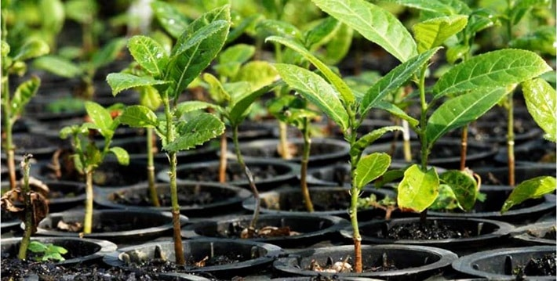

Únete al Cambio
Cada acción cuenta. Desde plantar un árbol hasta educar a una comunidad, juntos podemos construir un futuro sostenible. ¡Actúa ahora y sé parte de la transformación ambiental que nuestro planeta necesita!
Bienvenido a EcoAcción
EcoAcción conecta a las personas con iniciativas de reforestación en Bolivia. Descubre cómo puedes contribuir al cambio apoyando proyectos, aprendiendo sobre sostenibilidad y resolviendo tus dudas. ¡Juntos podemos hacer la diferencia!
Explora EcoAcción
Mejores Proyectos
Descubre los proyectos más destacados que están haciendo un gran impacto en la reforestación.
Donaciones
Contribuye a proyectos de reforestación seleccionando las iniciativas que más te inspiren.
Consejos
Aprende prácticas sostenibles y descubre cómo puedes ayudar al medio ambiente.
Centro de Ayuda
Resuelve tus dudas con nuestra sección de preguntas frecuentes y soporte.